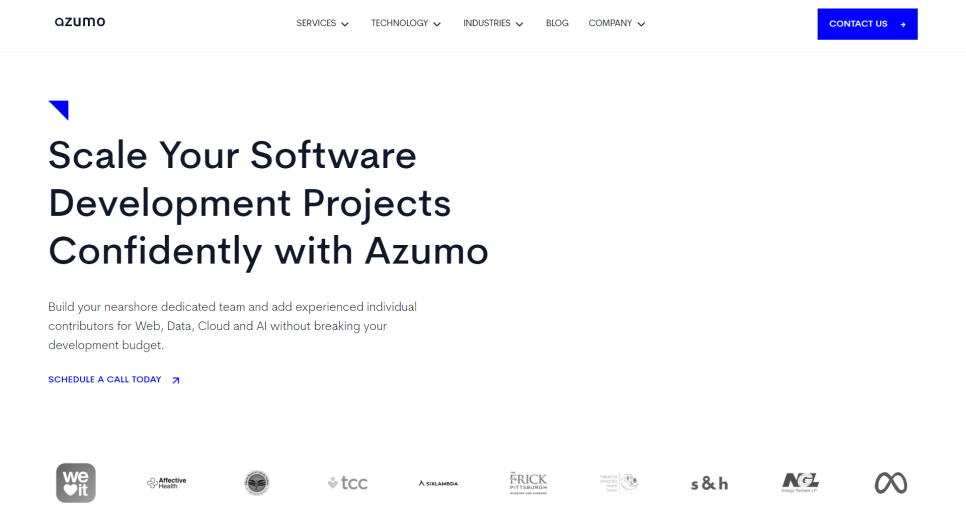
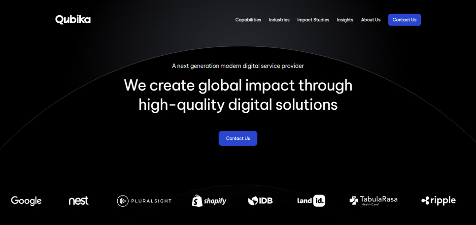
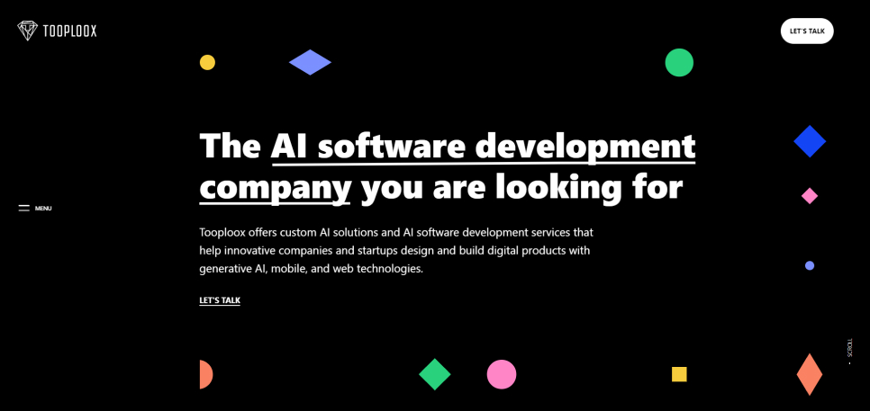
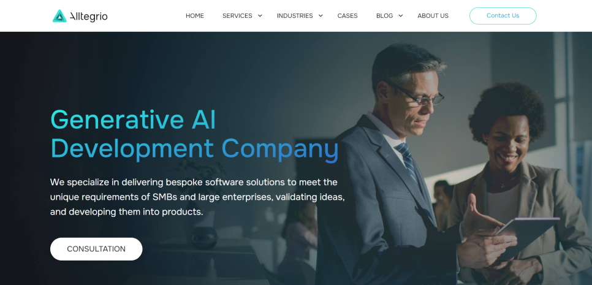
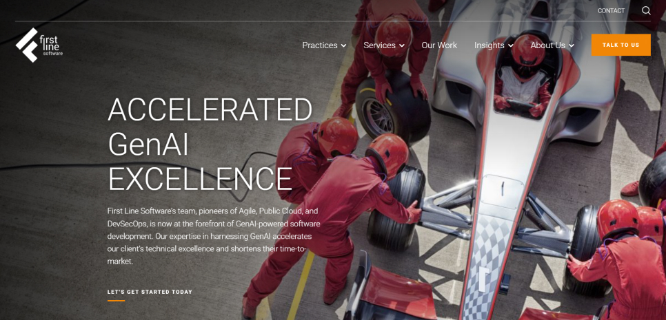
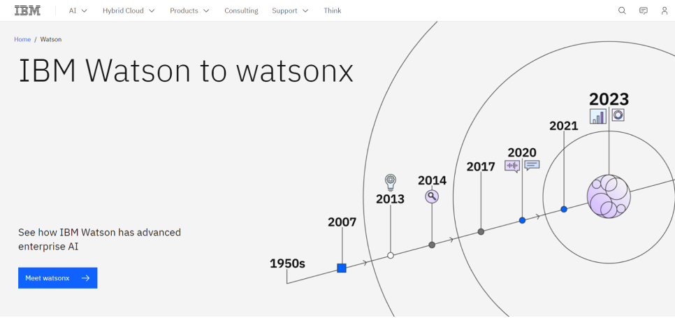
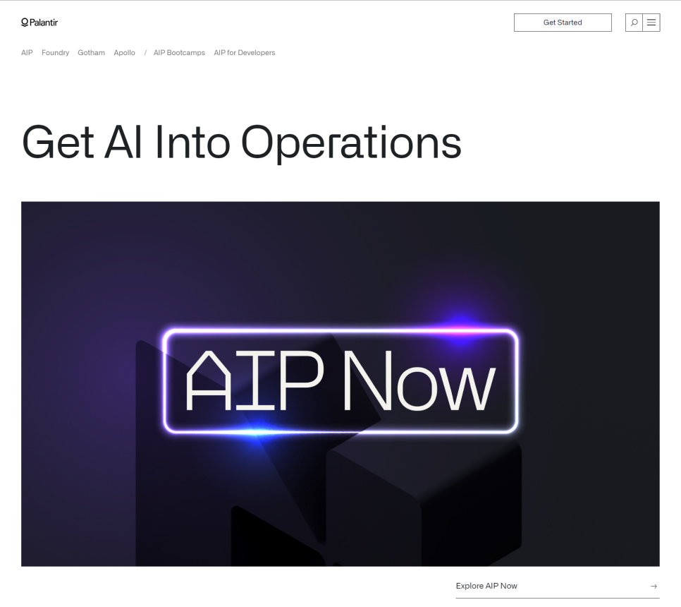
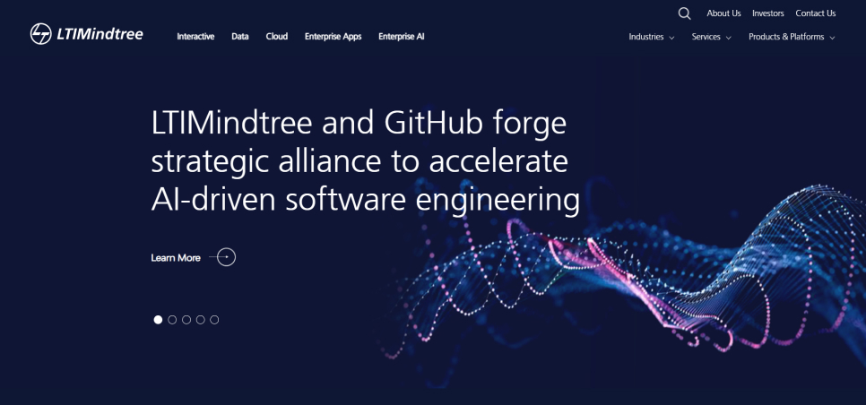

We are almost at the end of the line for 2026 and I know that a lot of you out there are planning to start projects when the new year comes. And if you’ve stumbled upon this blog then you’re probably ready to build and need enterprise AI development companies that can create your AI software for you. If this describes you then you have come to the right place and we have a detailed list of the best AI agent development companies that are capable of building scalable AI apps for whatever your needs are for the enterprise. The reason I’m writing this blog is because AI development, as hyped as it is, can be confusing. Because there is a lot of buzz about AI out there and many companies have started to join this trend and offer AI solutions for businesses.
However, the problem with finding enterprise AI development companies is that not all companies work alike and until you work with them directly there’s not much information you can gather from just the internet. But you don’t have to worry about that now because I have compiled a comprehensive list of the best companies that you can approach. The list will go through 10 of the best companies for enterprise AI development, their specialties and their nuances so that you can make the right choice. Here quality isn’t really the question because all of the service providers we have compiled are of high quality. However, some of these enterprise AI development companies will have some specialties such as the unique services they provide, their approach towards clients and the industries they work in. As a business it’s up to you to pick a company that aligns with your needs.
Let’s get started.
What to Look for When Choosing an Enterprise AI Development Company?
AI is booming and will continue to boom as more and more businesses adopt the technology. The problem is that concepts like machine learning, natural language processing and deep learning are complex and while there are plenty of resources available out there that can help you build your apps not all enterprise AI development companies out there will give you the same results. We have taken the time to research and compile this list but when you’re taking the decision to hire an organization you should have all the information. More specifically what the key features are that you should look for when taking your pick.
A major factor that you should consider is whether the company is experienced in building enterprise apps using AI. The best way to know that is to look at their portfolio of past clients and see what kind of apps they have created. Enterprise AI development companies always maintain quality because these applications are often large scale and hundreds of thousands or even millions of users have to use them. A strong track record with building scalable and user friendly apps is what you should look for when you’re deciding. The other thing you should look at is whether the company has a strong team with resources suited to work on large scale projects like enterprise AI apps. The third thing you should look for is of course if the company is a good fit for the culture of your organization because you will be working with them for the long term. But with that said, let’s get into our list of enterprise AI development companies.
1. Sparkout Tech

Sparkout Tech Solutions also denoted Sparkout for short is an established service provider that delivers enterprise AI and custom AI development services to businesses globally. In the world of enterprise AI Sparkout stands as a premier organization which offers AI development services using multiple technologies like machine learning, deep learning, natural language processing, computer vision, predictive analytics and data science. Sparkout’s major vision is to empower businesses through effective implementation of AI technologies to streamline your operations, increase efficiency, improve user engagement and transform your customer experience. As one of the leading enterprise AI development companies Sparkout has a strong and capable team of engineers, architects and designers that focuses on diving deep into your business goals and customer expectations and building solutions that can enhance your business.
Over the past 7 years Sparkout has established itself as a leading enterprise software provider and has created solutions for industries in the likes of healthcare, fintech, logistics, education, government, gaming and many more. Sparkout's strong expertise across sectors and its strong focus on building scalable and secure enterprise solutions has given it the reputation of being a world leader among enterprise AI development companies. Sparkout also has a reputation for combining multiple emerging technologies like AI, blockchain and IoT to build highly customized solutions that are tailored to each business’s goals, customer needs and addressing their pain points. With over 100 dedicated professionals on its roster and partnerships with leading AI frameworks and platforms Sparkout is known to be the go to service provider for AI development globally.
Pros:
- A strong track record for combining emerging technologies to make impactful solutions.
- Deep experience when it comes to technologies within AI like machine learning, deep learning, natural language processing, predictive analytics and many more.
- As one of the enterprise AI development companies Sparkout has an emphasis on building solutions that are tailored to your business goals powered by AI.
- A strong team of over a 100 professionals which includes AI engineers, architects and data scientists.
Cons:
- Enterprise solutions that are complex and have a lot of advanced AI features could seem expensive if you’re on a tight budget.
- Solutions that are complex with multiple AI features could take longer to develop.
Website: www.sparkouttech.com
2. azumo

Azumo is well known around the world as a leader in building solutions using AI and machine learning. Their major aim is to help businesses streamline their operations and make their decision making process smarter using cutting edge AI technology as one of the top enterprise AI development companies. They have a major presence in the US being based out of Chicago and their industrial expertise include the likes of retail, healthcare, finance and logistics. Additionally, they have a good reputation for delivering AI solutions that are of enterprise grade and help businesses enhance their performance. When you look at their specialties you can see machine learning models, data analytics and natural language processing.
One highlighting feature about them is that their focus is on helping businesses modernize their legacy systems through AI integration and facilitating automation and predictive analytics that reduce the costs for operations and improve efficiency as one of the leading enterprise AI development companies. Their services cover everything from end to end which starts from the initial ideation stage of your project and strategy to the complete development of your solution and the deployment. Aumo also has a strong and capable team of AI engineers, data scientists and consultants who will work closely with you to craft tailored solutions that suit your business goals.
Pros:
- They have deep expertise when it comes to machine learning and AI technologies.
- They are known for providing highly tailored solutions to their clients that cater to specific needs of an industry.
- As one of the major enterprise AI development companies they have a strong emphasis on building solutions that are practical and scalable.
Cons:
- Since the solutions they provide are comprehensive and highly customized smaller businesses could find their pricing on the expensive side.
- Customized solutions require you to train AI models using relevant data which could add to the delivery timelines.
- Their presence is majorly on larger markets which could be a barrier if you’re trying to tackle a smaller market.
Website: https://azumo.com/
3. Qubika

Qubika is known for being a dynamic company for AI development and they focus on building cutting edge solutions using artificial intelligence, machine learning and deep learning as one of the top enterprise AI development companies. They have a highly capable and strong team which includes data scientists, AI engineers and software engineers who have the industry experience to help businesses transform their operations using AI technologies and drive innovation. The company’s specialties include building AI solutions that are scalable and range from predictive analytics to natural language processing and automation. Their services are geared towards helping your enterprise optimize yout operations, enhance your decision making process and improve customer experience.
A great highlight about Qubika is that their innovative solutions have been deployed successfully across several industries like finance, retail, manufacturing and logistics. Being among the leading enterprise AI development companies their commitment to collaboration is noteworthy and are always trying to add tangible value for their clients by working closely with their business to understand their intricacies and providing tailored solutions that suit their goals. They have a strong reputation and track record when it comes to building complex solutions which are powered by AI and optimizing them to suit real world applications.
Pros:
- Their expertise for building AI solutions touch a wide range of different industries and use cases.
- Their technical expertise runs deep when it comes to deep learning and predictive analytics as one of the major enterprise AI development companies.
- Their major focus is on scalability and ensuring that the AI solutions they build grow as your business grows.
Cons:
- Their presence when it comes to niche markets is limited which could be a barrier if you operate in these markets.
- As they provide highly customized and tailored solutions smaller businesses could find their pricing to be on the higher side.
- If you have a large scale application to build with advanced AI technologies then the delivery timelines could be extended.
Website: https://qubika.com/
4. Tooploox

Tooploox is known as one of the enterprise AI development companies that’s highly respected and their expertise is in building intelligent and data driven solutions for their clients. Their experience is also comprehensive and extends over a decade and they focus on combining AI technology with innovative product development which allows them to create solutions that solve real world challenges of your business. Their specialties in AI development include machine learning, computer vision and data analytics where they offer a comprehensive range of services for a host of different industries. Their industrial expertise as one of the leading enterprise AI development companies include e-commerce, healthcare and finance.
Their major expertise that’s noteworthy is in designing and implementing systems using AI that can help your enterprise automate repetitive tasks, analyze large amounts of data and provide insights that are actionable for decision making. What’s more is that they also have a strong emphasis on collaboration and they are known for working closely with their clients to create solutions using AI that meet the specific goals of your business. Their team is also very noteworthy and includes leading engineers, data scientists and experts as one of the top enterprise AI development companies and can provide end to end solutions for AI which are not only innovative but also scalable.
Pros:
- Their expertise is very strong when it comes to building solutions using AI and machine learning.
- They provide solutions that are data driven for multiple sectors.
- Their approach to AI development is geared towards scalability and building solutions that provide long term value.
Cons:
- Since they provide comprehensive AI solutions for the enterprise smaller businesses could find their AI development cost expensive.
- They are very strong when it comes to their core expertise but may not focus much on industries outside of their area of focus as one of the top enterprise AI development companies.
- Complex enterprise projects with a lot of different modules could take longer to fully develop.
Website: https://tooploox.com/
5. Alltegrio

Alltegrio is a reputed company for developing enterprise AI solutions and they are known for their advanced use of AI and machine learning technologies. Their major focus is on helping businesses build cutting edge platforms using AI and automate business processes, enhance your decision making capabilities and deliver predictive insights. Their experience in the industry is also comprehensive and they work with businesses in industries like finance, healthcare and retail with an emphasis creating solutions that help organizations transform their data into actionable intelligence. As one of the leading enterprise AI development companies their AI solutions spread access technologies like predictive analytics, natural language processing and data mining.
The goal here is to uncover hidden patterns in your data, trends that humans may miss and to find out new opportunities within the existing dataset that you have. Their enterprise offerings in AI are geared towards streamlining your operations, reducing your operational costs and improving your customer experience. Their approach to developing solutions is agile which means that they emphasize collaboration and ensure that their clients receive solutions that are tailored to meet the specific needs of their business. As one of the major enterprise AI development companies Alltegrio’s solutions are known for being scalable and make them an ideal technology partner for enterprises.
Pros:
- Their major specialty is in creating solutions using AI and machine learning for enterprises.
- Their expertise is very deep when it comes to predictive analytics and data mining.
- Their approach to AI development is agile and they collaborate with their clients to provide highly tailored solutions.
Cons:
- Since their major focus is on building comprehensive solutions for enterprises their cost for development could seem high if you’re a smaller business.
- As one of the premier enterprise AI development companies their solutions are customized and may require you to set up heavy infrastructure for running AI models.
- Large scale enterprise projects that use advanced AI technologies could add to a longer timeline.
Website: https://alltegrio.com/
6. Firstline Software

Firstline Software is a leading provider of AI development and can offer you robust solutions that are designed to help your enterprise modernize your processes. They do this by creating solutions using AI that can provide you with automation, data analysis and intelligent decision making capabilities. As one of the leading and trusted enterprise AI development companies their expertise lies in artificial intelligence machine learning and big data analytics and they help businesses implement AI technologies into their workflows that let them drive innovation and improve the business’s operational efficiency. They have deep expertise with industries like finance, healthcare, retail and manufacturing.
Their team is also noteworthy and has skilled engineers and data scientists working for them and they are known for working closely with their clients to understand their challenges and deliver solutions leveraging the power of AI. One of their offerings as one of the top enterprise AI development companies is support for integrating AI models, training these models and conducting ongoing optimizations for these models which is geared towards providing sustained business value. They are known for being a dedicated and experienced service provider for enterprise software development and AI helping businesses make the most of opportunities.
Pros:
- Their speciality is in creating scalable AI solutions for a diverse set of industries.
- Their services are full cycle which starts from the initial consultation and ideation stage to full scale deployment.
- Their focus when it comes to security and operational efficiency is high as one of the leading enterprise AI development companies.
Cons:
- They have a comprehensive line of services for AI development which caters to enterprises which could make the price tag steep for smaller businesses.
- If you have a complex project with a lot of advanced features to implement then the development timelines could be extended.
- Their areas of focus are spread across various industries but if you’re in a niche industry then it could be a barrier.
Website: https://firstlinesoftware.com/
7. IBM Watson

IBM Watson is not just a well known name but a flagship AI platform by the legendary IBM. As one of the major enterprise AI development companies they offer a comprehensive suite of powerful AI solutions for businesses which help you enhance your decision making process, automate processes and improve your customer experience. Their suite of tools and services include technologies like machine learning, natural language process, computer vision and deep learning. Additionally, their AI solutions are used by businesses in a variety of different sectors like healthcare, finance, retail and education.
IBM Watson has an extremely powerful tool for AI driven insights which allow businesses to utilize the full potential of their data and gain an edge over the competition. As one of the leading enterprise AI development companies they are known for being highly reliable for businesses and provide enterprise technology services to support businesses scale effectively using AI technologies. Another major highlight about them is that they provide APIs that are easy to integrate and AI models that you can customize which companies can use to easily adopt AI into their workflows and address specific challenges. The goal here is to help you improve productivity, reduce operational costs and enhance your customer experience.
Pros:
- They can provide you with a comprehensive array of AI tools which includes advanced technologies like natural language processing and machine learning as one of the top enterprise AI development companies.
- Their track record is very strong when it comes to industries like healthcare, finance and retail.
- Their solutions are also known for seamlessly integrating with existing enterprise systems.
Cons:
- Their solutions are majorly comprehensive and suit larger organizations and may not be affordable for smaller businesses.
- Since their solutions tackle some of the biggest problems in the industry their solutions may carry some learning curve to use properly.
- If you already have a complex system with you it can take longer timelines to integrate AI solutions into your system.
Website: IBM Watson
8. palantir technologies

Palantir Technologies is a well known organization and one of the trusted enterprise AI development companies renowned for providing their customers with data analytics platforms powered by AI and allows you to make data driven decisions seamlessly. Their AI solutions are geared towards optimizing your business processes by leveraging machine learning and big data analytics to find out hidden insights within your data. They usually build solutions that are aimed at solving complex problems and providing actionable insights for businesses to improve their decision making. The industries they focus on for this include government, finance, healthcare and many more.
Being one of the leading enterprise AI development companies you may have heard about their platforms like Palantir Foundry and Palantir Gotham. These platforms allow your business to make smarter and faster decisions by integrating, analyzing and visualizing vast amounts of data. Another noteworthy thing is that the AI and machine learning solutions they build are designed to scale as your enterprise scales with its various requirements. The company is also on a committed mission to help companies like you use your data to drive innovation and improve your operational efficiency.
Pros:
- Being of the enterprise AI development companies their specialties include data integration and analytics for large enterprises.
- Their track record and expertise is very strong when it comes to machine learning and big data analytics.
- They have served various clients in the sectors of government and healthcare.
Cons:
- Their solutions being geared towards large enterprises could mean that the cost for implementation and maintenance could be cost prohibitive for small or medium sized businesses.
- For advanced solutions that solve complex problems the learning curve for your team to learn these tools could be a bit steep.
- Their solutions as one of the trusted enterprise AI development companies can be intensive in terms of the resources to manage.
Website: https://www.palantir.com/
9. Capgemini
Capgemini is not just a company, they are a globally recognized organization and brand that leads in consulting, technology and AI services. With their impressive track record and brand comes end to end AI solutions that can help businesses transform their operations. Their major focus is on building tailored solutions to solve their customers’ problems and they do this with a strong emphasis on artificial intelligence, data analytics and automation. As one of the leading enterprise AI development companies Capgemini is well known for having deep expertise in industries like automotive, banking, insurance and manufacturing.
Their major focus here is to help businesses streamline their processes, enhance decision making and drive growth through the adoption of AI technologies. When it comes to their capabilities in AI you can see technologies like machine learning, natural language processing and robotics process automation. This enables you to automate your tasks, predict trends in the market and get actionable insights from your data. They also have a very experienced team with them as one of the top enterprise AI development companies consisting of AI specialists and consultants who are known for their collaboration and tailoring solutions to the unique goals of your organization.
Pros:
- Their experience when it comes to AI and automation is extensive with expertise across multiple industries.
- They can provide you with end to end services in AI development which starts from the strategy stage to the implementation and optimization afterwards.
- Their track record when it comes to big data analytics using AI is very strong.
Cons:
- As you can expect their cost for development for enterprise grade AI solutions can be expensive if you’re a smaller business.
- As one of the leading enterprise AI development companies their implementation timelines can be extended given that you have a large scale project.
- Their services majorly cater to enterprise audiences which could be a barrier if you’re a smaller business.
Website: https://www.capgemini.com/gb-en/
10. Mindtree

When it comes to technology consulting and IT services Mindtree is a very well known name in the industry and their innovative AI solutions are also known for being high quality. Their major focus is on providing enterprises with AI solutions that help them to drive growth and business transformation. As one of the major enterprise AI development companies their expertise when it comes to AI is deep with services for machine learning, artificial intelligence and data analytics. With this Mindtree enables businesses to leverage the power of AI to automate their internal processes, enhance their customer experience and make decisions that are data driven.
Apart from this they also can provide you services for predictive analytic, natural language processing and computer vision and they are designed to optimize our business operations and improve your decision making. Along with their impressive track record they serve multiple industries as one of the leading enterprise AI development companies and include retail, banking, healthcare and manufacturing. Here they can help you implement scalable solutions using AI that can solve real world problems. Mindtree is very passionate about helping businesses become future proof by providing them with solutions that provide maximum value.
Pros:
- Their suite of AI services is quite comprehensive and include machine learning and natural language processing.
- Their expertise when it comes to helping businesses transforming using the power of AI is noteworthy.
- The major focus they have is on building solutions that are customized to the sector you operate in as one of the trusted enterprise AI development companies.
Cons:
- Their services for the enterprise are quite extensive and could be cost prohibitive for startups and small businesses.
- Like many AI enterprise solutions you may need to customize it considerably to suit your needs directly.
- Again similar to other major service providers their advanced AI solutions may need some training on your part to use properly.
Website: https://www.ltimindtree.com/
How to Pick the Right Enterprise AI Development Company
Choosing the right enterprise AI development company is more than just checking the portfolios. You need an expert team that understands your industry needs, long-term goals, and tech landscape. Before picking one, ensure the partner satisfies the aspects mentioned below.
1. Industry Expertise
Choose a firm that has a deep understanding of your domain. If they actually know your day-to-day workflow, potential risks, and customer needs, they can build AI that solves real-time problems quickly.
2. Technical Depth
Look for robust capabilities in data engineering, model development, system integration, and cloud technologies. This is because you need a team that can actually handle complex enterprise environments without breaking things.
3. Proven Project Delivery
Ensure to inspect their case studies and see how they actually handle projects of similar cases. A reliable and flexible partner shows consistent results, predictable timelines, and transparent communication throughout the lifecycle.
4. Long-Term Support
AI is not a one-time setup. Having this in mind, pick up a company that offers updates, monitoring, retrains, and continuous optimization, so your AI stays accurate as your organization grows.
Some Final Words About The Top 10 Enterprise AI Development Companies Looking Into 2026
Moving into 2026, businesses have to understand the increasing demands of the market and changing customer preferences if they want to stay ahead of their competition. When you’re picking a company from our enterprise AI development companies list, you have to understand how they integrate with the business you have right now. Many of these companies prefer collaboration and will want to work closely with you to build tailored solutions for your business. Which is another way of saying that your collaboration with any enterprise AI development company will be long-term term and you have to factor these in before you start your project. If you’re new to AI solutions, make sure that you have detailed conversations with the companies so that you can understand the costs and timelines clearly.
Because while most enterprise AI development companies will be transparent about their own pricing AI solutions require significant cloud resources like servers and GPUs which could add to your costs. Now, these costs can be minimized if you design your solution correctly and this is also another question that you can ask. The list that we have compiled here contains companies that are well known globally for providing great services in AI development. However, many of them are leading specialists in some areas and not in other sectors. Depending on the nature of your business and project you have to analyze these specialties and choose a company that suits your particular needs. Last but definitely not the least the company you choose should align with your organizational principles and culture so that you can ensure a smooth and long term collaboration.